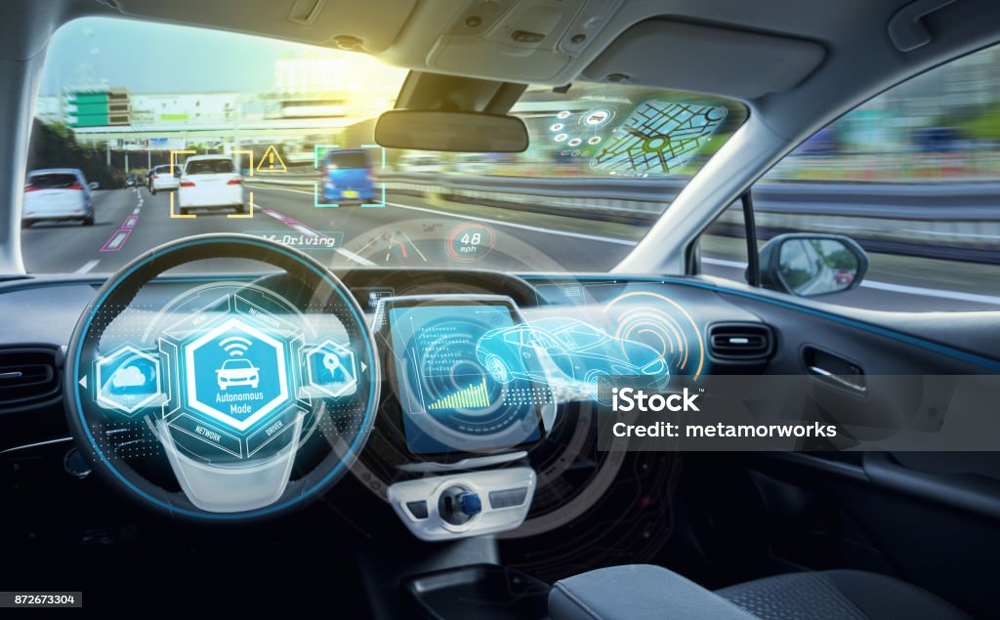

Smart Cars
Smart cars, also known as connected cars or intelligent vehicles, incorporate advanced technologies to enhance safety, efficiency, and convenience on the road. These vehicles utilize sensors, cameras, and communication systems to gather data about the surrounding environment, enabling features such as adaptive cruise control, lane-keeping assistance, and automatic emergency braking. Smart cars often integrate with smartphones and other devices, allowing drivers to access navigation, entertainment, and diagnostic information seamlessly. Moreover, emerging technologies like autonomous driving promise to revolutionize transportation by eliminating the need for human intervention entirely. However, challenges such as cybersecurity risks, regulatory concerns, and societal implications must be addressed to realize the full potential of smart cars safely and ethically.
Advanced Cars
Sidebar

You wouldn't know that the arithmetic advancement of ai: Chat GPT wrote 90% of this website's explanation.